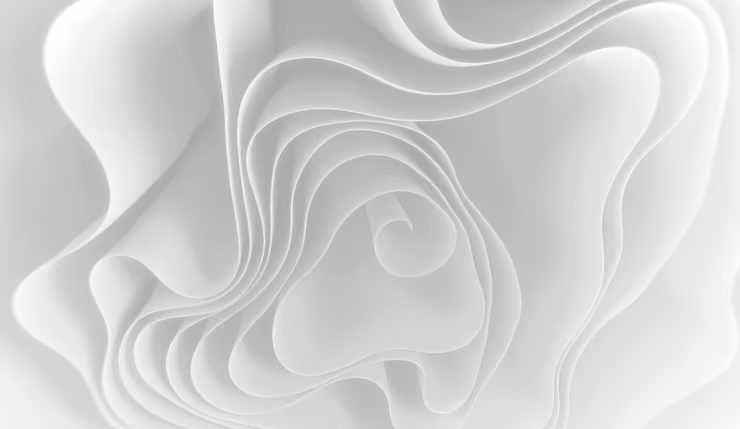

заглушка · детализация 3/10
Складка
белое на белом, но читаемое
сгиб 1
Тон, который пришёл из снимка
Палитра здесь не выдумана, а снята прямо из pic.jpg.
Снимок оказался полностью бесцветным: в нём нет ни одного
цветного пикселя, красный, зелёный и синий каналы совпадают
до значений. Тёмный край — #A2A2A2, светлый — #FFFFFF,
медиана — #D1D1D1. Разброс меньше двух ступеней: снимок
нечем различать, кроме как складками.
Именно поэтому фон страницы темнее бумаги. Лист должен иметь край: если фон и бумага одного тона, страница выглядит как пустой белый прямоугольник, и это уже не подача, а обрыв.
сгиб 2
Где текст лежит, а где не лежит

pic.jpg, 740×429. Подпись стоит под снимком на
бумаге, а не поверх него: на самой картинке подпись была бы
светлым текстом на светлом фоне.
- если положить текст на снимок тон #D1D1D1 и текст #E8E4DE дают около 1,7:1. Для чтения не годится никак.
- как сделано здесь бумага #FBFAF8 и чернила #24211D дают около 15:1. Сгиб и текст не мешают друг другу.
сгиб 3
Как загнуть лист
Ползунок на «столе» наклоняет лист по верхнему краю: чем больше угол, тем сильнее сжимаются нижние полосы. Проверить стоит именно то, что заявлено выше, — не пропадает ли текст, когда фон уезжает из-под строк.
Поверх листа при наклоне появляется мягкая тень от сгиба. Она затемняет верх полосы и служит честным признаком: если текст уезжает под тень, читать его нельзя, и страница об этом предупреждает заранее, а не прячет.
сгиб 4
Почему это заглушка
Настоящей подачи «Складка» пока нет: нет текстов, нет снимков работ, нет замеров. Страница существует ровно для двух вещей — чтобы ссылка в каталоге вела куда-то осмысленное, а не в обрыв, и чтобы каталог можно было открыть с телефона и посмотреть, что витрина живая.
Здесь сознательно нет:
- клиентов и отзывов — выдуманные имена вреднее пустоты;
- цифр достижений — любая цифра без источника является ложью;
- разделов работ — подробность 3/10 означает, что брать нечего.
Наполнить её — работа на несколько дней. Делать её на выдуманных данных бессмысленно: заглушка, которая притворяется готовой, мешает больше, чем честная пустота.